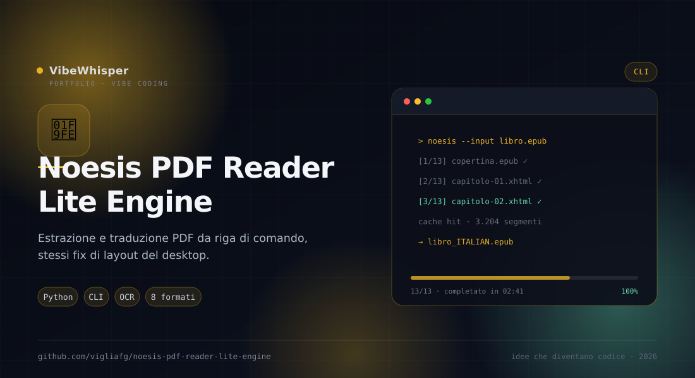

Noesis PDF Reader Lite Engine
Edizione da riga di comando del motore di Noesis PDF Reader Lite: estrae le pagine in Markdown con gli stessi fix di layout e, se vuoi, le traduce.
📖 Cos'è
Noesis PDF Reader Lite Engine è la versione headless di Noesis PDF Reader Lite. Prende un PDF, ricostruisce l'ordine di lettura con l'engine adattativo del desktop e produce Markdown pulito — oppure HTML, testo, EPUB, DOCX, ODT, RTF e LaTeX. Espone le stesse opzioni della procedura guidata dell'app: selezione pagine, contenuto originale/tradotto/entrambi, motore e lingue, figure, formato e impacchettamento. Con -gui offre un wizard TUI opzionale basato su Textual.
👤 A chi serve
È pensata per pipeline di elaborazione documenti, archivi digitali e utenti da terminale che devono convertire molti PDF senza aprire una GUI. Va bene per preparare testi per la ricerca full-text, per un LLM o per un'edizione EPUB, e per tradurre in batch interi capitoli mantenendo la struttura. È utile anche su server remoti, dove Qt non è disponibile.
⚙️ Come funziona
Il motore è lo stesso del desktop, copiato verbatim: analizza ogni pagina, sceglie il piano di fix e produce Markdown con tabelle, figure e titoli ricostruiti. La CLI aggiunge la selezione delle pagine e l'export: può produrre un Markdown unico, uno ZIP di pagine singole, una cartella numerata o un vault con indice e front-matter. Per i PDF scansionati usa Tesseract OCR, se installato. La traduzione può essere fatta prima dell'export e il file tradotto porta il suffisso -translated.
🎯 Perché Noesis PDF Reader Lite Engine
Perché un comando deve bastare quando i PDF sono cento. L'engine porta la qualità dell'app desktop in uno script ripetibile, con le stesse regole di layout e la possibilità di scegliere esattamente cosa produrre.
✨ Caratteristiche Principali
- Stesso motore del desktop — Engine adattativo verbatim: ordine di lettura, tabelle, figure, header e titoli
- Selezione pagine — Pagina singola, intervallo, lista mista (
1,3,7-9) o tutte - Originale o tradotto — Contenuto
original,translatedoboth, con figure opzionali - Otto formati — Markdown, HTML autonomo, testo, EPUB, DOCX, ODT, RTF e LaTeX via pandoc
- Quattro output — Markdown unico, ZIP di pagine, cartella numerata o vault con
index.mde front-matter - OCR — Tesseract per i PDF scansionati, con scelta della lingua (
--ocr-lang eng+ita) - Traduzione — Motori Google/Microsoft e cache, con suffisso
-translatedsui file tradotti - Fallback sicuro — Se una pagina è problematica, ricade sulla pipeline classica solo per quella pagina
- Riepilogo JSON — Con
--jsonproduce un riepilogo leggibile da un altro programma
🏗️ Come Funziona
- Installa il pacchetto oppure esegui
cli.pydal checkout - Scegli le pagine con
--pagese il contenuto con--content - Imposta formato e impacchettamento con
--formate--range-mode - Aggiungi
--src/--dste il motore se vuoi tradurre durante l'export - Per i PDF scansionati attiva
--ocr-lang(serve Tesseract) - Usa
-guiper il wizard TUI, oppure--jsonper un riepilogo da script
📦 Installazione
# Requisiti: Python 3.10+ git clone https://github.com/vigliafg/noesis-pdf-reader-lite-engine.git cd noesis-pdf-reader-lite-engine python3 -m venv .venv . .venv/bin/activate pip install . # Estrazione di un capitolo noesis-pdf-reader-lite-engine manuale.pdf --pages 12-45 --content original -o cap3.md # Originale e traduzione nello stesso file noesis-pdf-reader-lite-engine articolo.pdf --content both --dst de -o articolo_de.md # Un file per pagina noesis-pdf-reader-lite-engine tesi.pdf --format folder --out pagine/ # Wizard TUI (richiede Textual) pip install ".[tui]" noesis-pdf-reader-lite-engine -gui
💡 Casi d'Uso
- Archivi digitali — Convertire intere raccolte in Markdown con una struttura prevedibile
- Pipeline LLM — Preparare testo pulito e figure referenziate per il retrieval
- Batch di traduzione — Tradurre capitoli o documenti e produrre file separati per pagina
- Server e CI — Eseguire l'estrazione senza GUI, con exit code e riepilogo JSON